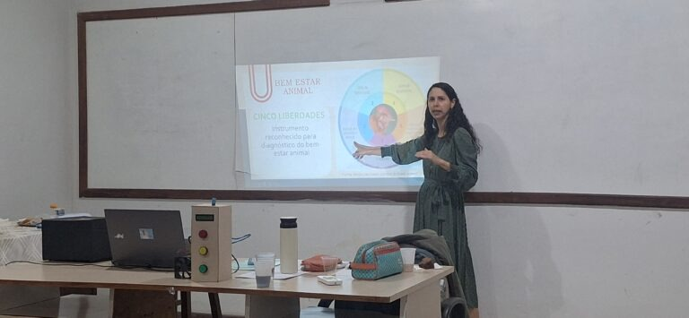
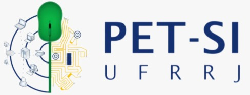
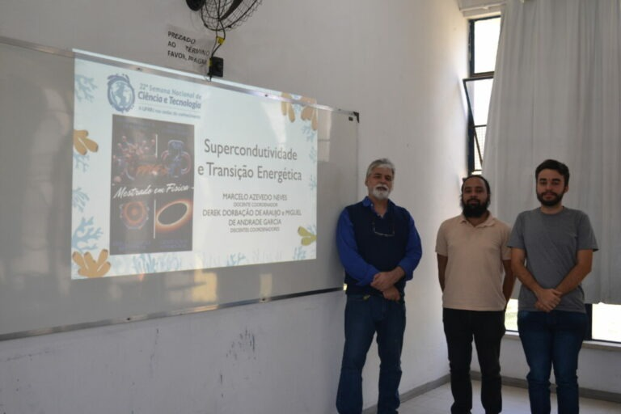
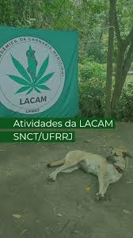

UFRRJ Extensões
Eventos
Cursos
Atividades
Divulgue sua Ação
Cena de Crime Simulada para SNCT 2025: "Planeta Água- Cultura Oceânica Para Enfrentar as Mudanças Climáticas No Meu Território."
Publicado em 5/12/2025

Semáforo bioclimático para galinhas de postura
Publicado em 5/12/2025
Materiais em Foco: Materiais na Engenharia Química
Publicado em 5/12/2025

PET-SI
Publicado em 5/12/2025
MOSTRA SCNT 2025: Monitoramento de sensores com envio de dados coletados para a NUVEM, tipo VPS, e o uso de aplicativo Android modelo DASHBOARD para acessar os dados da nuvem e realizar suas visualizações de forma gráfica e temporal.
Publicado em 5/12/2025
Mostra SNCT 2025: Circuito de Ciências com o Instituto de Ciências Exatas - UFRRJ
Publicado em 5/12/2025
Semana Rural 2025: Mostra de Cursos de Graduação
Publicado em 5/12/2025
II Mostra de Divulgação Científica: A Matemática Aplicada em Seropédica
Publicado em 5/12/2025
Modelagem 3D com Blender
Publicado em 5/12/2025

A capivara no mundo da supercondutividade
Publicado em 5/12/2025

SNCT 2025 Eventos: Mesa Redonda e Café com Cannabis
Publicado em 5/12/2025